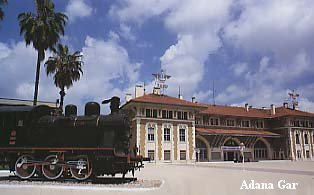
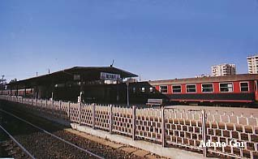

Haberler
Spor
 Galatasaray Başkanı Dursun Özbek'ten sürpriz bir hamle geldi. Kulüpler Birliği'nin başkanlığına soyunan Özbek, kulüpler arası atışmaları doğru bulmadığını ve bu konunun daha uygun şekillerde çözümlenmesi gerektiğini masaya yatırdı.
Galatasaray Başkanı Dursun Özbek'ten sürpriz bir hamle geldi. Kulüpler Birliği'nin başkanlığına soyunan Özbek, kulüpler arası atışmaları doğru bulmadığını ve bu konunun daha uygun şekillerde çözümlenmesi gerektiğini masaya yatırdı.
Gündem
Adana'da PKK/ KCK terör örgütü adına eylem yapıp, güvenlik güçlerine molotof kokteyli atan 5 kişi tutuklandı. Terörle Mücadele Şubesi ekipleri, 9 Ocak'ta merkez Yüreğir İlçesi'nin Anadolu, Dede Korkut ve 19 Mayıs Mahallesi ile ara sokaklarında toplanıp, korsan gösteri düzenleyen PKK/KCK yandaşlarına müdahale etti.
Son Dakika
Sultanahmet Meydanı'nda saat 10.20'de çok şiddetli bir patlama meydana geldi. Olay yerine ambulans, polis ve itfaiye araçları sevk edildi. Bölgede olağanüstü güvenlik önlemleri alındı, tramvay seferleri durdu.
ADANA'DA ULAŞIM
İlde Ulaşım havayolu, demiryolu, denizyolu ile yapılmaktadır. Pozantı ilçesi sınırlarında biten ve batıyı doğuya bağlayan Otoyol çalışmalarının il sınırları içindeki yapımı tamamlanmıştır.
Devlet Yolu
İl sınırları içinde 454 km devlet yolu bulunmaktadır. Bunun 119 km'si beton asfalt, 335 km'si sathi kaplamadır.
İl Yolu
İlde 405 km uzunluğunda il yolu bulunmaktadır. Bunun 6 km'si beton asfalt, 216 km'si sathi kaplama, 51 km'si stabilize, 121 km'si toprak yol, 3 km geçit vermeyen yol durumundadır.
Köy Yolu
İlde 243 köy-bucak ve belde belediyesinin yolu asfalt, 183 köy-bucak ve belde belediyesinin yolu stabilize, 71 köy-bucak ve belde belediyesinin yolu tesviyedir. Ayrıca 55 köy-bucak ve belde belediyesi karayolu güzargahındadır. İl sınırları içinde asfalt yol uzunluğu 1.348 km, stabilize yol uzunluğu 1.972 km, tesviyeli yol uzunluğu 1.595 km, ham yol uzunluğu 263 km olup, toplam yol uzunluğu 5.178 km'dir.
Hava Yolu
Adana Havaalanı 1937 yılında sivil-askeri havaalanı olarak hizmete girmiştir. 1956 yılında sivil havaalanı olarak kullanılmaya başlanmıştır. Havaalanı 1997 yılında 12.704 uçak trafiği gerçekleşmiştir. Bunlardan 7.158'i tarifeli, 5.546'sı ise tarifesizdir. 1997 yılı içerisinde 904.210 yolcu taşınmış olup, bunun 629.612'si hatlarda, 274.598 ise dış hatlardadır. 1997 yılında iç hatlarda 14.578.120 kg, dış hatlarda 6.925.008 kg olmak üzere toplam 21.502.200 kg yük taşınmıştır.
Adana ve tüm çevre illere hizmet veren havaalanının her yıl artan uçak, yolcu ve yük trafiğine sağlıklı bir şekilde hizmet verebilmesi için terminal dış hat binası yaptırılmıştır. Ayrıca iç hatlar terminal binası onarımı VİP ve CİP salonları teşkili ve tesisat galerisi yapım işi de tamamlanmıştır.
Adana-Karataş ilçesi Yemişli köyü mavkiinde Adana'ya 38 km, Karataş ilçesine 10 km uzaklıkta olan bir alan, yeni bir havaalanı için tesbit edilmiştir. 1996 yılında etüd programa alınmıştır.Adana'dan çeşitli ulaştırma şirketlerince Riyad, İstanbul, Ankara, Frankfurt, Münih, Cidde, Ercan, Berlin, Hannover, Amsterdam, Stutgard, Köln, Dusseldorf limanlarına seferler yapılmaktadır.
Uçak seferi yapılan iller ve dış hatlar 1997 yılında yaz sezonu boyunca Paris, Zürih, Amsterdam, Hamburg, Berlin, Münih gibi merkezlerden de tarife dışı charter seferleri düzenlenmektedir. Ayrıca Kuveyt, Kazakistan, Özbekistan gibi ülkelerde kargo taşımacılığı yapılmaktadır.
Demiryolu
Adana İli sınırları içinde 260 km,615 mt demiryolu bulunmaktadır. Demiryolu ilin Pozantı, Seyhan, Yüreğir, Ceyhan ilçelerinden, aynı zamanda Karaisalı ilçesi sınırlarından da geçmektedir. Devlet demiryolunun, içinden ve yakınından geçtiği köy ve kasaba sayısı 20 dir.
Denizyolu
Adana il sınırları içerisinde uluslar arası petrol ve yük taşımacılığına açık Botaş limanı ve Toros Gübre Fabrikaları Limanı bulunmaktadır.
Karataş ilçesinde bulunan balıkçı barınağı, yöre balıkçılarına hizmet vermektedir.